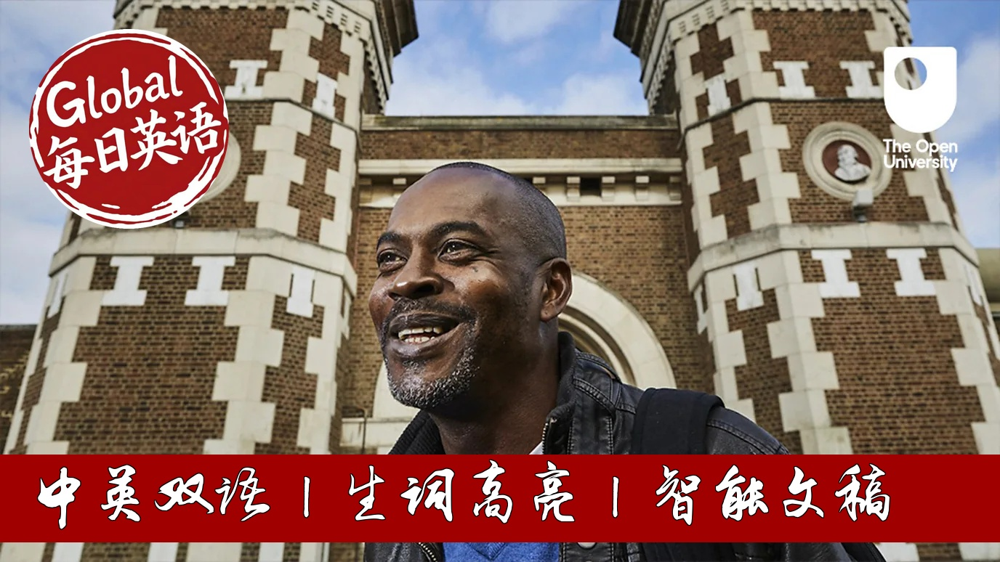

【BBC科普精选：从囚徒到PhD，不一样的人生】
Summary: Stephen Aquarita Vintaski shares his transformative journey from being a prisoner sentenced to 16 years for drug dealing to becoming a PhD holder working with incarcerated students. He recounts how the death of his father during his teenage years led him down a path of crime, but discovering education in prison gave him hope and purpose. Despite initial self-doubt and skepticism from other prisoners, he earned multiple degrees while serving his sentence. Now working as a lecturer in prisons, he emphasizes that everyone has the potential to change through education, challenging societal perceptions about prisoners and advocating for rehabilitation over pure punishment.
摘要： 斯蒂芬·阿夸里塔·文塔斯基分享了他从因贩毒被判16年监禁的囚犯转变为与囚犯学生打交道的博士的蜕变历程。他回忆了少年时期父亲去世如何使他走上犯罪道路，但在狱中发现教育给了他希望和目标。尽管最初自我怀疑并遭到其他囚犯的质疑，他在服刑期间获得了多个学位。如今作为监狱讲师，他强调每个人都有通过教育改变的潜力，挑战社会对囚犯的看法，并倡导以改造为主而非单纯惩罚。

⏱️ Estimated Reading Time: 6 min.
📚 四级生词 📚 六级生词 📚 雅思生词 📚 托福生词 📚 专八生词 📚 SAT生词 📚 考研生词 📚 GRE生词
Prisoner, PhD, the job dealer, father, each of these words conjures up a different picture.
None of them tells you exactly who someone is.
My name is Stephen Aquarita Vintaski.
My PhD candidates and an electric number to me, really open university.
I work with students in prison.
I love what I do.
It feels deeply personal to me because I used to be a prisoner too.
All of these levels have been mine.
So growing up, life was tough.
My father died in the car crash when I was a teenager and that hit me really hard.
I didn't see the world as a meritocracy.
I had to grab what I could.
But being a center prison for dealing drugs was a shock.
I was sentenced to 16 years.
For the first three months inside, I didn't speak to anyone.
Eventually, I started working in the kitchen and as people got to know me, I was eventually assessed for my educational potential and encouraged after that assessment to enroll at the Open University.
But the most difficult barrier was actually inside of me.
I'd left school with no qualifications.
Nothing, I was scared of my future and I decided to try.
My day job, working in the kitchen, seven and a serving, meant that I had to study at night, so I had to study my toilet while myself being small.
So when I finished my first module, he gave me hope and he gave me something I could focus on that was not going back now.
Other prisoners and gags kept asking me why I was wasting my time.
Studying wouldn't matter with my criminal record.
I thought I was changing.
I discovered I loved learning and that was enough to keep me going.
I served eight years of my 16-year sentence.
By the time I left prison, I had completed my first degree and I had also completed two further degrees master's level.
So after I was released, I got to job working with students in prisons, not in spite of who I was, but because of it.
I had to describe how I felt the first time I went back to prison as a lecturer and the government has come down and shoot my head.
What I want people to know is that I'm not different or special.
Anybody can do this.
Almost half of all prisoners have left school without achieving any formal qualification.
I know that feels and I had a massive impact in my confidence.
But that does not mean that you're not able to learn.
Everyone has the potential and the power to change.
I've seen it and I've lived it.
There was Winston Churchill who said, there is treasure if you can only find it in the heart of every man.
What do we want from our prisons?
Is the primary goal of prisons punish or to help find a different path?
The policies in coherent, you see?
Research shows that education does reduce real fending.
It allows former prisoners to make different choices.
So when I see new prisoners, I say to them, I wasn't even choose.
But I am now released outside, got a good job, got a good life, and with my family.
Had I met somebody like me, well, I was younger, I think it might have been very different.
No one believed in me.
I didn't believe in myself either.
It's taken two decades to get here.
And this is only the beginning.
The world prisoner is just a label.
I found freedom within my own mind.
You need to remember that you have the capacity to learn.
You have the capacity to change your life.
There is treasure within each and every one of us.